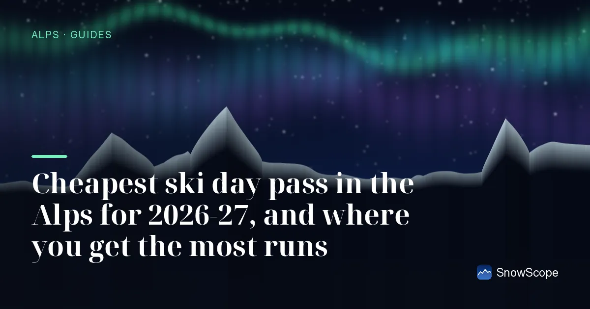
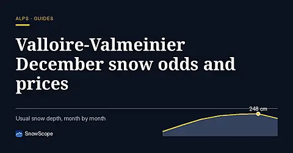

Cheapest ski day pass in the Alps for 2026-27, and where you get the most runs
The lowest day price in the Alps is not always the best deal. Les Karellis charges 36 EUR for an adult day, the cheapest we found, but for 58 EUR Alpe d'Huez opens 163 km of runs, almost four times as much skiing. Here is how nine budget-friendly resorts compare once you count the mountain you get.
See the live snow forecast for Les Karellis in the SnowScope appSnow depth, powder alerts and the 3D map, free.
Nine day passes from 36 to 60 EUR
At the bottom of the price list are two small French resorts: Les Karellis at 36 EUR for winter 2026-27 and Puy-Saint-Vincent at 44 EUR. Slovenia follows with Krvavec at 47 EUR on its standard rate and Vogel at 49 EUR.
Then come the larger areas. Valloire-Valmeinier asks 54.9 EUR for the Galibier-Thabor domain, Galtür 55.5 EUR in low season, Alpe d'Huez from 58 EUR, Vars-Risoul 58 EUR for the Forêt Blanche, and Pila above Aosta keeps a flat 60 EUR all season.
Kilometres of runs: the hidden discount
We counted the runs we have mapped for each resort. Alpe d'Huez leads with 163 km, then Valloire-Valmeinier and Vars-Risoul with 131 km each. For a strong skier who wants to cover ground, these three are the real bargains: a few euros more than the small resorts, three times the terrain.
Pila has 56 km, Les Karellis 45 km and Puy-Saint-Vincent 42 km, good for a relaxed day or a family. Galtür has 27 km, while Krvavec and Vogel have 16 km each: fine for a morning, short for a full day of fast skiing.
Will there be snow?
Our snow history of 46 past winters gives the other half of the answer. At mid-mountain, a usual December brings 67 cm at Valloire-Valmeinier, 65 cm at Les Karellis, 62 cm at Alpe d'Huez, 59 cm at Galtür, 53 cm at Puy-Saint-Vincent, 48 cm at Vars-Risoul and 44 cm at Pila. Krvavec and Vogel usually have only 10 cm and 6 cm.
Counting the weeks with at least 50 cm in 9 winters out of 10, Valloire-Valmeinier and Les Karellis have 19, Alpe d'Huez and Galtür 18, Puy-Saint-Vincent, Vars-Risoul and Pila 14, and the two Slovenian areas none. The bigger French areas are both cheap and reliable.
The best day for each kind of skier
On a tight budget: Les Karellis, 36 EUR with snow you can usually count on. For the most skiing per euro: Valloire-Valmeinier, the best mix of price, size and snow on this list. For a big day with famous runs: Alpe d'Huez from 58 EUR, with lifts up to 3306 m.
Families who stay in one place can save at Puy-Saint-Vincent. Krvavec and Vogel are worth it only if you are nearby, for example from Ljubljana, and after a good snowfall.
Beginners do not need a big area: a smaller resort with gentle slopes near the village and a cheaper pass is often the better day. Expert skiers get far more out of the big French domains, where one pass links several valleys and the long runs keep you away from the crowds.
Make the weekend cheaper
Starting prices like the one at Alpe d'Huez rise on busy dates, so buy online as early as you can. Sleeping in the valley or a nearby village is often much cheaper than at the foot of the lifts: Risoul or Vars for the Forêt Blanche, the Maurienne villages for Valloire and Les Karellis.
The map in this article shows stays under 120 EUR a night for the weekend of 11 to 13 December 2026 near our four picks. Check the resort's site before you go: opening dates depend on the snow.
Tips for skiers
- Cheapest day: Les Karellis, 36 EUR.
- Most runs for the money: Valloire-Valmeinier, 54.9 EUR for 131 km, or Alpe d'Huez from 58 EUR for 163 km.
- Slovenian day passes: only after a good snowfall.
- Buy online early: starting prices go up on busy days.
More maps (external sites)
References and credits
- Les Karellis, official prices 2026-2027 www.leskarellis.com/fr/tarifs-2026-2027-sans-lien
- Puy-Saint-Vincent, official ski pass prices 2026-27 www.puysaintvincent.com/forfait-ski-puy-saint-vincent
- Krvavec: official lift-pass prices (2026-27), checked 13 November 2026 rtc-krvavec.si/cenik-urnik
- Vogel: official lift-pass prices (2026-27), checked 13 November 2026 vogel.si/cenik-zima/
- Valloire, official ski pass shop (Galibier-Thabor), winter 2026-27 skipass.valloire.com/fr/
- Galtür: official lift-pass prices (2026-27), checked 13 November 2026 www.galtuer.com/en/winter/operating-times-prices/skipass-prices-silvapark
- Alpe d'Huez, official ski pass shop, winter 2026-27 skipass.alpedhuez.com/hiver/
- Risoul, official ski pass page, Forêt Blanche 2026-27 risoul.labellemontagne.com/fr/hiver/forfaits/risoul-foret-blanche/
- Pila, official daily ski pass prices 2026-27 pila.it/en/skipass-pila/daily-skipass/
About these numbers
Snow numbers: SnowScope snow history, 46 past winters (1980-81 to 2025-26) at three heights of the resort, a model of the past corrected for height (an estimate for an area, not resort reports). Lift, run and access facts: the sources listed below, checked on the date shown.
Cite this report
For research, teaching or the press: the numbers and charts are free to reuse under CC BY 4.0 with this citation.
SnowScope (2026), Cheapest ski day pass in the Alps for 2026-27, and where you get the most runs, https://snowscope.app/blog/en/2026/11/cheapest-ski-day-pass-alps-2026-27-most-runs-for-your-money.html, accessed 2026-11-19
SnowScope (Atlas Labs). (2026, November 19). Cheapest ski day pass in the Alps for 2026-27, and where you get the most runs. SnowScope snow reports. https://snowscope.app/blog/en/2026/11/cheapest-ski-day-pass-alps-2026-27-most-runs-for-your-money.html
BibTeX
@misc{snowscope2026cheapestskidaypassalps20,
author = {{SnowScope (Atlas Labs)}},
title = {Cheapest ski day pass in the Alps for 2026-27, and where you get the most runs},
year = {2026},
month = nov,
howpublished = {\url{https://snowscope.app/blog/en/2026/11/cheapest-ski-day-pass-alps-2026-27-most-runs-for-your-money.html}},
note = {Published 2026-11-19 15:21 UTC; accessed 2026-11-19}
}· CC BY 4.0 · Methods, data and tools →
Les Karellis: snow and temperature by height, this winter vs last (tools) →
Follow Les Karellis
Free: a message when fresh snow is coming, and the forecast every morning.
More snow reports

Valloire-Valmeinier offers 131 km of runs and a 98 % chance of 30 cm of snow at mid-mountain by mid-December.

Pila above Aosta pairs a flat 60.00 EUR day pass with reliable December snow on its upper slopes.

Is Alpe d'Huez worth it for December 2026? We check the snow odds, the starting price of 58.00 EUR, and compare it with Les 2 Alpes.